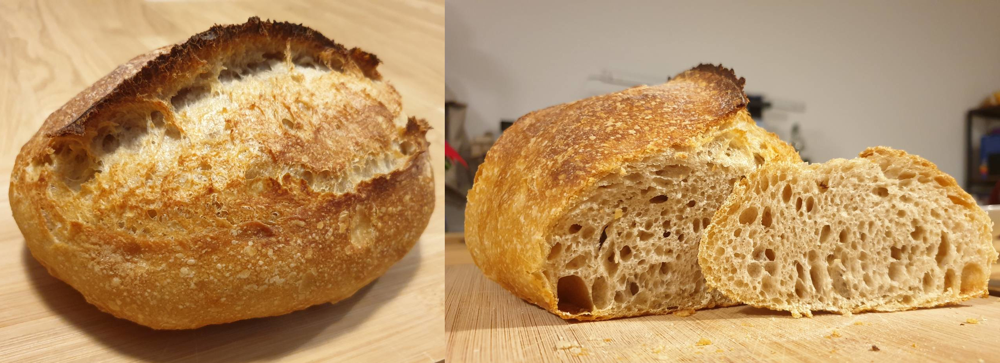

Das typische Weizensauerteigbrot-Rezept für alle Sauerteig-Enthusiasten. Kann als Basisrezept für beliebige Anpassungen verwendet werden. Je nach Mehlsorte kann der Wassergehalt angepasst werden (Daumenregel: Eiweißgehalt 11 – 12% → Wassergehalt ~70%, Eiweißgehalt 14 – 15% → Wassergehalt ~80%). Unterschiedliche Zimmertemperaturen und Aktivität des Sauerteigs beeinflussen die Reifezeit. Ich habe einen Starter, der sich nach 6 Stunden bei 24°C verdoppelt und arbeite bei 24°C. Saaten können nach dem Autolyseschritt mit den restlichen Zutaten dazugegeben werden.

Zutaten (Menge ×1)
Gib die gewünschte Menge an:
Sauerteig
Anstellgut
Roggenvollkornmehl
Wasser (40°C)
Hauptteig
Sauerteig
Mehl Type 550
Wasser (40°C)
Salz
Utensilien
Gärkorb
Gusseisentopf
Sprühflasche
scharfes Messer
Ofeneinstellung
⏲ 230°C Ober-/Unterhitze, 35 Minuten
Möglicher Zeitplan: Am Vorabend gegen Mitternacht den Sauerteig ansetzen. Am nächsten Morgen um ca. 9 Uhr mit dem Hauptteig beginnen. Am Nachmittag ist das Brot fertig.
Sauerteig ansetzen
Das Anstellgut mit dem Wasser vermischen. Anschließend das Mehl hinzugeben und alles zu einer homogenen Masse vermischen.
Ungefähr 10 Stunden reifen lassen.
Autolyse
Mehl und Wasser homogen vermengen und 1 Stunde stehen lassen.
Glutenstruktur aufbauen
Den Sauerteig und das Salz zum Hauptteig hinzugeben und zu einer homogenen Masse vermengen.
Den Teig auf die unbemehlte Arbeitsfläche geben und Spannung aufbauen, indem wiederholt eine Seite etwas herausgezogen und auf die Mitte gefaltet wird. So lange wiederholen, bis der Teig zu straff ist um lang gezogen zu werden.
Den Teigling mit der Naht nach unten auf die Arbeitsfläche legen und mit der Schiebemethode rundwirken. D.h. den Teig mit etwas feuchten Händen über die Fläche schieben, leicht rotieren und wiederholen.
Stockgare
Mit der Naht nach unten in einen Behälter geben und ruhen lassen, bis der Teig auf ca. 150% seiner Größe gewachsen ist (bei 24°C Raumtemperatur bei mir ca. 3 Stunden). Dabei jede Stunde einen Coil Fold durchführen. D.h. mit etwas feuchten Händen alle 4 Seiten nacheinander anheben und unter den Teigling falten.
Stückgare
Arbeitsfläche und Gärkorb bemehlen.
Den Teig auf die Arbeitsfläche stürzen, zu einem Laib formen und mit der Naht nach oben in das Gärkörbchen legen gehen lassen.
Beim Drucktest in den Teig sollte die entstandene Delle sich nur langsam zurückbilden und sichtbar bleiben. Bei mir nach ca. 1.5 h.
Den Ofen mit Gusseisentopf auf 230°C vorheizen.
Teig auf ein mit Backpapier belegtes Schneidebrett stürzen, einmal längs einschneiden und gut mit Wasser bespritzen.
Dann in den Gusseisentopf heben, abdecken und in den Ofen schieben.
Nach 15 Minuten Den Deckel entfernen und weitere 20 – 25 Minuten backen.